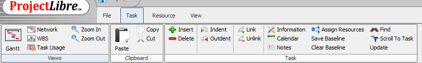
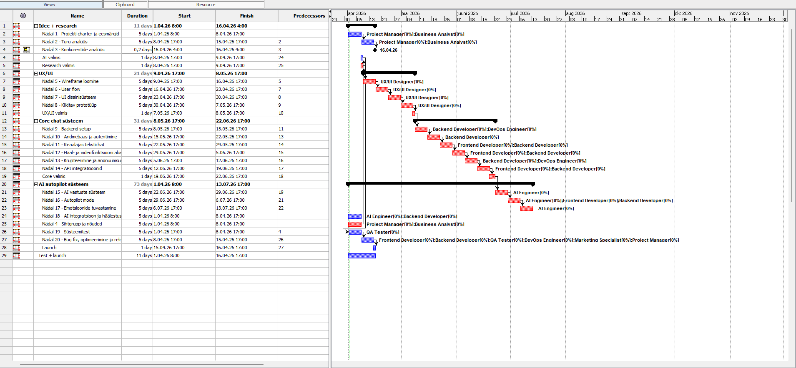
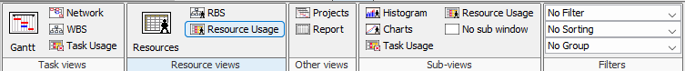
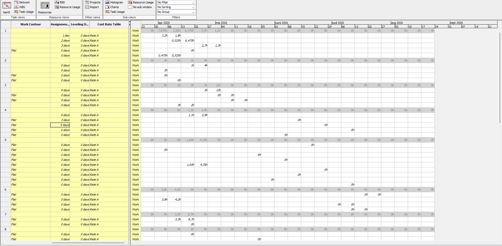

Mis on diagrammid ProjectLibre'is
Näe projekti
struktuuri
Miks diagrammid?
Diagrammid ProjectLibre'is on visuaalsed tööriistad, mis aitavad projekti paremini mõista ja hallata, näidates ülesannete ajakava, kestust ja omavahelisi seoseid.
Gantti diagramm kuvab millal ülesanded algavad ja lõppevad ning võrgudiagramm näitab ülesannete järjekorda ja sõltuvusi, aidates seeläbi näha projekti struktuuri, jälgida edenemist ja tuvastada võimalikke probleeme ajakavas.
Samm-sammuline juhend
Gantti diagramm programmis ProjectLibre
GANTT-diagrammi vaatamiseks tuleb minna vahekaardile „Task" ja seejärel „Gantt".
Gantti diagramm
Nüüd avaneb teie projekt koos Gantti diagrammiga, kus saate seadistada ülesannete ja allülesannete aega ning vaadata ajakava paremal ja päevade arvu.
Resource diagramm programmis ProjectLibre
Ressursside graafikuid vaadata saate, kui lähete vahekaardile „Views" ja sealt „Resource Usage".
Resource Usage diagramm
Nüüd kuvatakse teile kõik teie loodud materiaalsed ja tavalised ressursid, nende tööaeg ning millistes ülesannetes nad osalevad.
Ekraanipildid




Visualiseeri projekti täielikult.
Gantti diagramm ja ressursigraafik annavad täieliku ülevaate projekti kulgemisest. Kasuta neid koos, et planeerida ülesandeid ja ressursse optimaalselt.